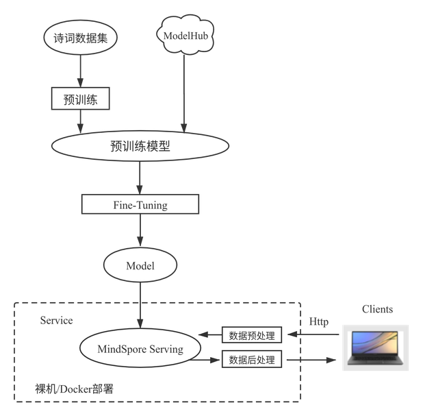
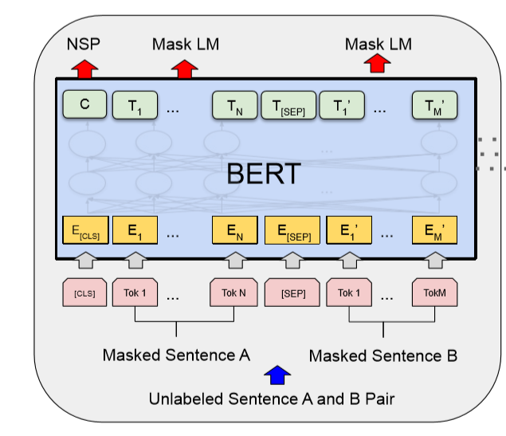
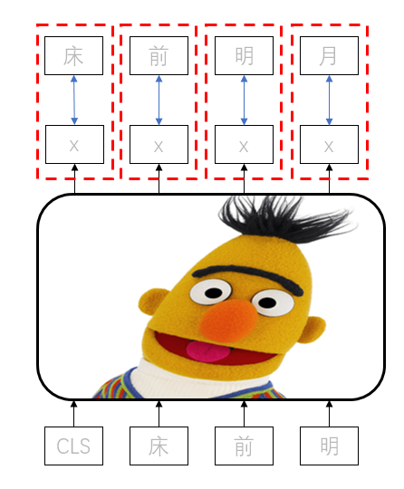

使用BERT网络实现智能写诗¶
Ascend 进阶 自然语言处理 全流程

五千年历史孕育了深厚的中华文化，而诗词是中华文化不可或缺的一部分，欣赏过诗词就可以感受到当中纯净、辽阔的意境，极致的感性，恰恰弥补了节奏紧迫的现代生活带给我们的拥挤感、浮躁感，古语曰：熟读唐诗三百首，不会作诗也会吟，今天理科生MindSpore也来秀一秀文艺范儿！
案例简介¶
通过MindSpore训练出智能写诗模型及部署预测服务，具体流程如下图所示：

图1：案例流程图
由于Bert预训练比较费时费力，在本案例中省略了预训练阶段，直接提供MindSpore预训练好的Bert-Base模型，经过Fine-tuning后训练获得最终的模型的训练全流程。
模型介绍¶
和诗词打交道需要用NLP相关的网络，BERT作为NLP领域中里程碑式的模型，极大地推动了NLP社区的发展，BERT模型由Google提出，采用Transformer中的Encoder结构，通过若干层Encoder的堆叠并借由注意力机制，在多项GLUE（General Language Understanding Evaluation）任务中取得了SOTA（State Of The Art）的效果。
正是由于这种注意力的机制，不同于以往的循环神经网络的结构，可以做高度的并行计算，这样便可以充分发挥出Ascend 910AI处理器的强大算力，获得极佳的性能表现。
模型训练¶
分为两个步骤，即Pre-training和Fine-tuning。首先在海量无标签的数据上进行Pre-training，希望通过此过程让模型掌握一般的人类语言语义机制，然后在Fine-tuning阶段会针对特定细分领域的有标签数据进行训练以完成特定任务。
Pre-training¶
Pre-training是在无标签数据上进行的自编码训练，因此训练任务的设计尤为重要，BERT中的Pre-training包含两项任务MLM(Masked Language Model)和NSP(Next Sentence Prediction)。
MLM任务是在输入时，随机将部分token置换为[MASK]标记，然后通过注意力机制，由其上下文预测出被遮挡位置的原始token。
BERT模型的输入是两“句”话：A与B，构造数据的时候会以50%的概率随机调换A、B的位置，NSP任务是预测A与B是否是相连的两“句”话。
在MLM基础上再增加一个NSP任务，是考虑到实际任务中并没有MLM这种任务，增加一个更符合实际任务类型的预训练任务。
从上述描述中可以看出，Pre-training并不需要任务数据标签，这种MLM的训练任务本质上是去噪自编码模型，因此BERT可以利用海量的无标签数据来进行预训练。通过预训练阶段的任务设置，BERT可以从无标签数据中学到基础语义逻辑，然后配合Finetune过程完成特定任务训练。
BERT模型的结构如下图所示，输入两“句”话，如果是中文模型，那么每一个token对应一个汉字，[CLS]和[SEP]是插入的特殊标识位。

图2：Bert模型结构[1]
Fine-tuning¶
Fine-tuning是在BERT的预训练模型基础上，在最后增加一层适配实际任务，然后在有标签数据上进行少量的训练。
Fine-tuning的模式可以分为两大类，end-to-end Fine-tuning和feature-based approach，两者的区别在于Finetune阶段中是否修改BERT预训练模型中的参数，正常情况下都是使用end-to-end Fine-tuning。
模型修改¶
BERT采用了Encoder结构，attention_mask为全1的向量，即每个token都可以看到其前后的token，此举帮助每一个token都可以了解到整句话信息从而加强语义理解能力，所以BERT天生就不是生成式模型。
语句生成任务中，在生成下一个token时，应当只能看到之前token的信息，而不应该看到全局信息，因此需要在修改attention_mask为下三角矩阵，这样当前token只能看到自己及之前的token信息。
用于Fine-tuning的数据是40000多首诗词，并无标签，因此构造Fine-tuning任务如下图所示，每一个token的输出要接近下一个标签token，使用交叉熵作为损失函数。

图3：训练流程示意图
样例代码¶
可以在这里下载完整的样例代码：https://gitee.com/mindspore/docs/tree/r1.6/docs/sample_code/bert_poetry，直接运行体验实现写诗效果，代码结构如下:
└─bert_poetry
├── src
├── bert_for_pre_training.py # 封装BERT-Base正反向网络类
├── bert_model.py # 定义BERT正向网络结构
├── finetune_config.py # Fine-tuning配置文件
├── fused_layer_norm.py # 定义fused_layer_norm
├── __init__.py # __init__
├── utils.py # 定义Fine-tuning正向网络结构
├── poetry_utils.py # 分词器 Tokenizer
└── poetry_dataset.py # 解析poetry.txt，生成所需dataset
├── serving
├── bert
├── 1
├── poetry.mindir # 导出的MindIR文件
├── servable_config.py # Serving推理脚本
├── poetry_client.py # Serving用户脚本
├── serving_server.py # Serving服务器脚本
├── vocab.txt # 词汇表
├── generator.py # 推理生成诗句使用函数
├── poetry.py # 训练、推理、导出函数
实现步骤¶
基础信息¶
本例可在Ascend 910 AI处理器平台上进行训练及推理。
训练¶
在src/finetune_config.py中修改pre_training_ckpt路径，加载预训练的ckpt，修改batch_size为bs，修改dataset_path为存放诗词的路径，默认的BertConfig为Base模型。
'dataset_path': '/your/path/to/poetry.txt',
'batch_size': bs,
'pre_training_ckpt': '/your/path/to/pre_training_ckpt',
执行训练指令
python poetry.py
推理验证¶
修改poetry.py中test_eval函数来控制随机生成、续写诗句或是藏头诗。
generate_random_poetry函数实现随机生成和续写诗句的功能，如果入参s为空则代表随机生成，s不为空则为续写诗句。
output = generate_random_poetry(poetrymodel, s='') #随机生成
output = generate_random_poetry(poetrymodel, s='天下为公') #续写诗句
generate_hidden函数实现生成藏头诗的功能，入参head为隐藏的头部语句。
output = generate_hidden(poetrymodel, head="人工智能") #藏头诗
执行推理指令
python poetry.py --train=False --ckpt_path=/your/ckpt/path
会打印出最终生成的诗句，脚本中默认生成一首随机生成、一首续写诗词、一首藏头诗，结果如下所示：
随机生成：
大堤柳暗，
春深树根。
东望一望，
断回还家。
山色渐风雨，
东风多雨禾。
无情与去，
万里所思。
续写 【天下为公】:
天下为公少，
唯君北向西。
远山无路见，
长水见人偏。
一路巴猿啸，
千峰楚客啼。
幽深有诗策，
无以话年华。
藏头诗 【人工智能】:
人君离别难堪望，
工部张机自少年。
智士不知身没处，
能令圣德属何年。
服务部署¶
通过MindSpore Serving将训练好的模型部署成推理服务。服务端部署包含以下3个步骤： MindIR导出、Serving服务器启动、Serving客户端启动；
客户端发送推理请求给服务器，服务器调用Serving服务进行模型推理，推理生成的诗句返回给客户端展示。注意，要先启动服务器再启动客户端。
模型导出
在使用Serving部署服务前，需要导出MindIR文件，在
poetry.py中提供了export_net函数负责导出MindIR模型，执行命令：python poetry.py --export=True --ckpt_path=/your/ckpt/path
会在
serving/bert/1路径下生成poetry.mindir文件。Serving服务端启动
在服务器侧启动Serving服务，并加载导出的MindIR文件。
cd serving python serving_server.pyServing客户端启动
在客户端启动Serving推理请求。
cd serving python poetry_client.py此时在客户端输入指令，即可在远端服务器进行推理，返回生成的诗句。
选择模式： 0-随机生成，1：续写，2：藏头诗
选择相应的模式，即可由Serving服务调用推理，将生成的诗句返回给客户端。